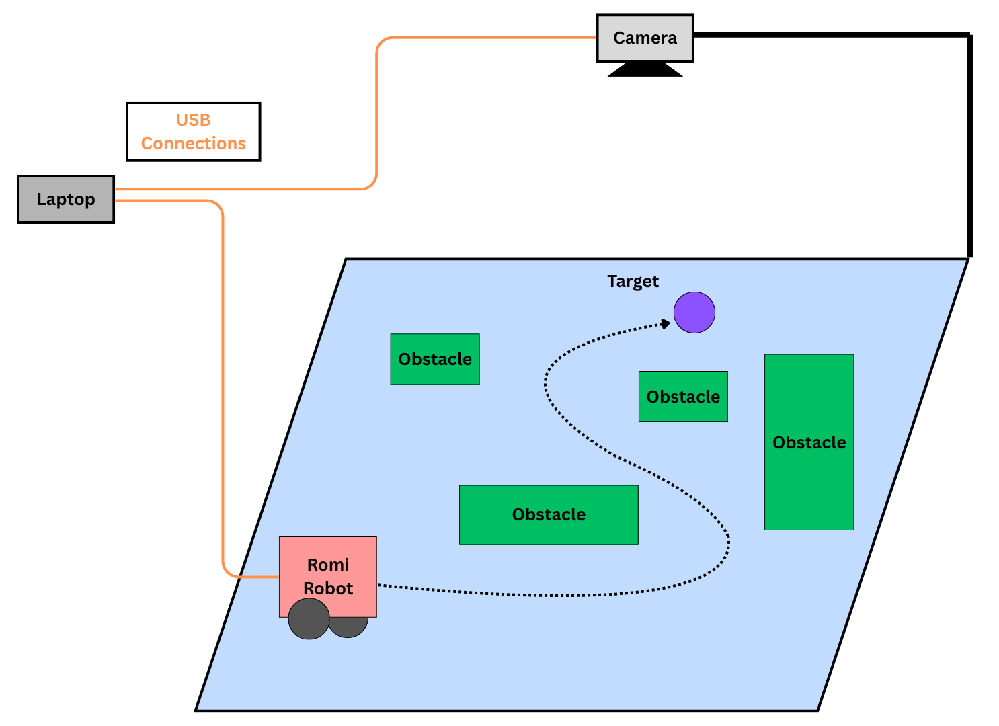
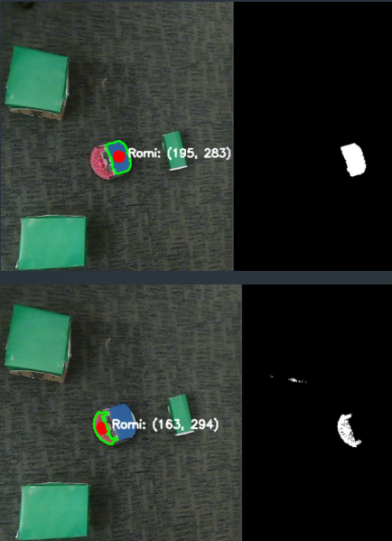
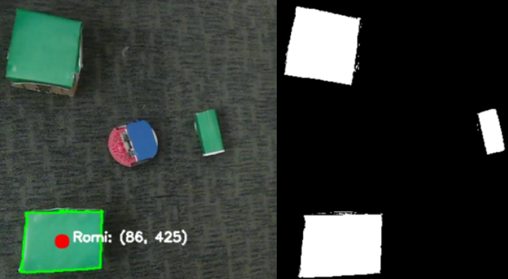
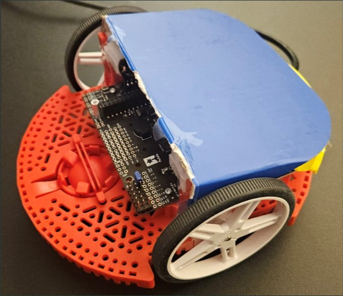

ECE 3162 Robotics · UConn, Fall 2025
A wheeled robot that navigates an obstacle field to a clicked goal point, using only an overhead webcam for localization. The webcam feed runs through a perception and planning pipeline on a laptop: color tracking identifies the robot's position and heading, green-tagged obstacles are turned into an inflated occupancy grid, and a wavefront planner produces a smoothed path that the robot follows under heading-based control. The robot replans continuously, so obstacles can be moved during a run and the path updates within roughly a second.
The laptop shows the overhead view with overlays for the inflated obstacles (blue), the planned path (green), and the robot's detected heading. After a click sets the goal, the robot turns to face the next waypoint and drives forward, replanning as it goes.
The course assignment was to design and build an autonomous robot demonstrating a path-planning algorithm of our choice. We chose an off-board, vision-based approach: rather than putting sensors on the robot, we'd treat the robot as a "dumb" actuator and put all the perception and planning on a laptop with an overhead camera view.
That setup mirrors how a lot of real warehouse and factory-floor robotics works, a central system sees the whole environment, plans for individual robots, and sends them commands. It's cheaper per robot, easier to coordinate multiple robots, and a useful method for testing planning algorithms before deploying them onto more expensive platforms.
The webcam streams to the laptop, which runs the perception and planning loop in Python with OpenCV. The laptop sends single-character motion commands to the Romi 32U4 over USB serial. An Arduino sketch on the Romi maps each character to a motor-speed pair.

System architecture: overhead camera → laptop perception/planning → Romi over serial
Each frame, the laptop runs the full pipeline:
Color tracking and heading.
The frame is converted to HSV, and three masks are extracted: red for the front of the robot, blue for the back, and green for obstacles. For each color, the largest contour above an area threshold is taken and its centroid computed from image moments. Robot position is the midpoint of the front and back centroids and heading comes from atan2 of the front-minus-back vector. Using two markers instead of one means heading is read directly from the image without needing the robot to move.

Overhead frame (left) and HSV mask isolating the robot markers (right)
Inflated occupancy grid.
The green obstacle mask is resized to a coarser grid (5× downsample) for planning speed. The grid is then inflated using an elliptical structuring element sized to the robot's radius, so any cell that would put the robot in collision is marked blocked. On top of that, it runs Harris corner detection on the raw obstacle grid and apply an extra round of inflation around detected corners. This was a response to a failure mode during testing: the robot kept clipping concave corners because the base inflation was uniform. Extra padding at corners specifically solved that.

Camera view of obstacles (left) and the obstacle mask before corner inflation (right)
Wavefront planner.
The planner is a breadth-first search expanding outward from the goal cell. Each reachable cell gets labeled with its distance to goal in steps (8-connected, so diagonals are allowed). Once the wavefront has filled the reachable space, a path is extracted by starting at the robot's cell and repeatedly stepping to the neighbor with the lowest distance value: a discrete gradient descent over the distance field. The planner runs roughly once per second, plus immediately on goal change or when the previous path is invalidated.
Path smoothing.
The raw wavefront path is a sequence of grid-cell steps that zig-zags more than the robot needs to. It runs through two passes: first a line-of-sight shortcutter that walks the path and drops intermediate points whenever a straight line between two non-adjacent points doesn't cross an obstacle cell, then a Catmull-Rom spline through the shortcut waypoints to produce a smooth curve. The result is a path the robot can follow with mostly forward motion and small heading corrections, rather than the stutter-stop turns of the raw grid path.
Motion control.
Each frame, the controller finds the closest waypoint on the smoothed path to the robot's current position, then looks a few waypoints ahead as the target. It computes the angle from the robot to the lookahead point, subtracts the robot's heading, and normalizes the error to [-180, 180]. If the error is above a threshold the controller issues a rotate command (left or right); otherwise it drives forward. Commands are single characters (F, L, R, B, S) sent over serial. The Arduino on the Romi maps each character to a motor speed pair using the Romi32U4 library.
Stuck-recovery.
If the planner ever returns no path, usually because the robot has drifted close enough to an inflated obstacle that its current cell counts as blocked, the controller enters a short backup mode, drives in reverse for a fraction of a second, then forces a replan. This was added after seeing the robot get stuck against inflated obstacle boundaries during testing.
The final system reliably navigates the Romi from a starting position to a clicked goal through a field of green-tagged obstacles. Obstacles can be picked up and moved while the robot is in motion and the path updates on the next planning cycle. The backup-and-replan behavior recovers the robot when it gets stuck, which was previously a hard failure.
The full pipeline of perception, occupancy grid construction, wavefront BFS, line-of-sight shortcutting, Catmull-Rom smoothing, and heading-based control, runs in real time on a laptop webcam feed and successfully drives the robot through cluttered environments with moving obstacles.
Two features from the original proposal were dropped during the project:
The Romi 32U4 platform with red and blue HSV markers attached to the front and back for overhead tracking. The robot communicates with the laptop over a micro-USB tether.

Romi 32U4 with front (red) and back (blue) HSV markers